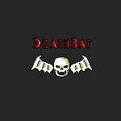
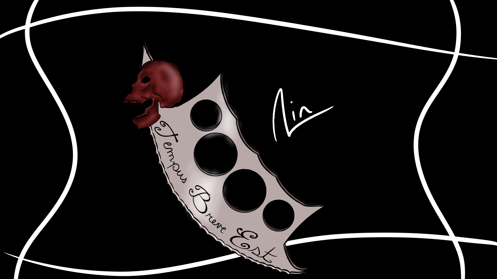
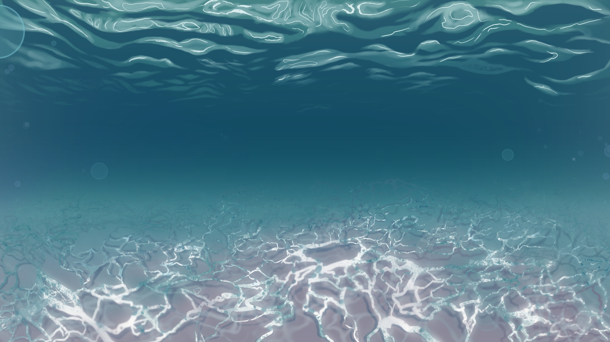
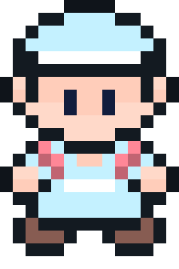
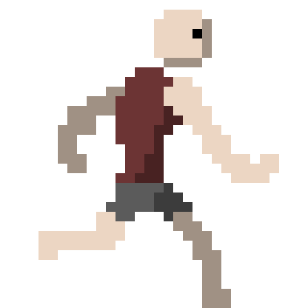
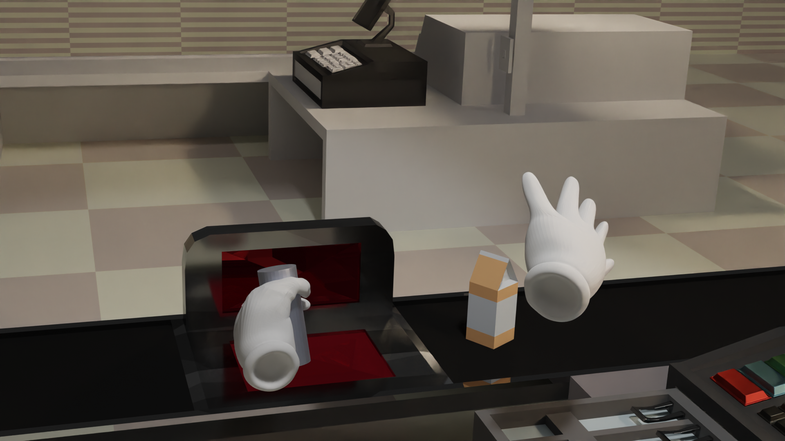
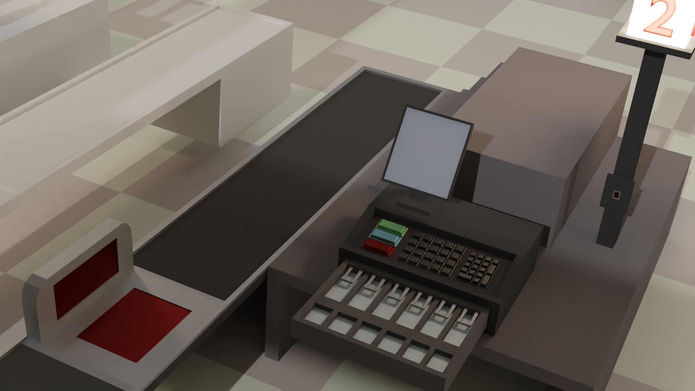
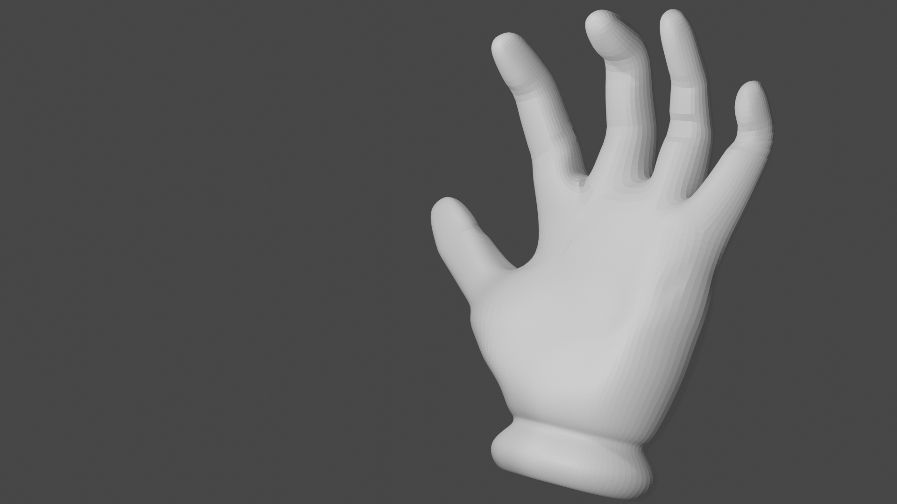

◦ The Sweet Relief of Creativity ◦
Some of the programs I use for my various forms of art are:
As far as digital art softwares goes, I would personally recommend Krita! Krita offers a lot of flexability and customization in a clean way that I've only witnessed in paid art software. It sports customizable docker panels, custom brushes, pen tablet support, and even a way to save your workspaces so you can have the most optimal workflow for tasks that require multiple skills (e.g. scripting, drafting, and animating).
Here are some works that have resulted from my dabbling:
  While Pixel Studio may not have my favorite layout (the ui is very clunky), it is a decent way of keeping proportions equal in pixel animation and offers enough settings that I find it satisfactory for the occasional need to make a sprite.
Here you can view some of the sprites I custom made for games I have programmed:
 Last but not least, we have my favorite software of all time. Blender is an amazing tool thats just about a versitile as a program could be. Due to its open source nature, there are constantly individuals expanding on the thousands of capabilities this program is currently equiped with. Any need that touches upon the realm of 3D rendering can be satistied here. The only downside is that the learning curve is quite steep despite the fact that there was a ui overhall that aimed at making everything more user friendly.
Here are some custom models and maps I created for my game centered around being a cashier:
  